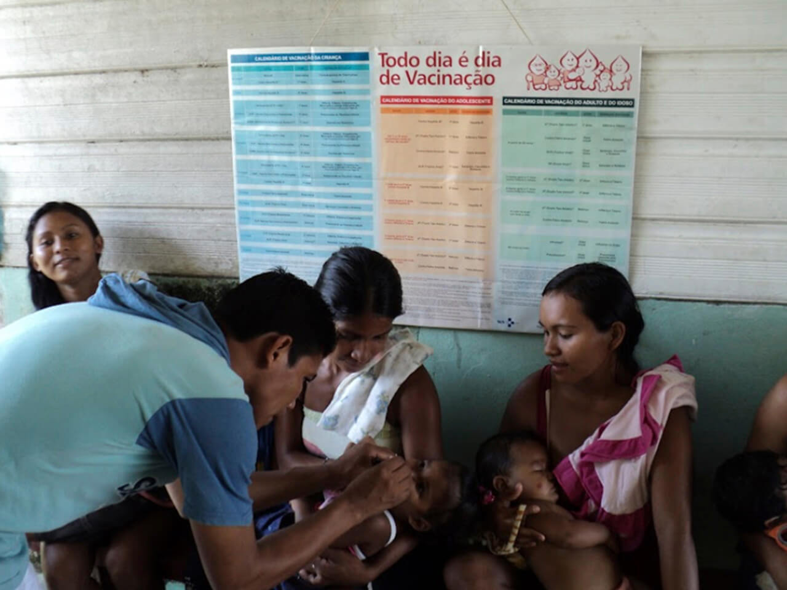

Módulo 4 | Aula 3 Programas de saúde e o protagonismo dos Agentes Indígenas na garantia da atenção diferenciada
Tópico 4
Política Nacional de Atenção Integral à Saúde da Criança (PNAISC)
Essa Política foi criada apenas em 2014 e é muito importante para garantir acesso à saúde das crianças. Ela é uma continuidade da Política Nacional de Atenção Integral à Saúde da Mulher, pois após o nascimento da criança, a equipe de saúde também tem como prioridade o cuidado na primeira infância, que vai do nascimento até completar 6 anos de idade.
Em 2015 essa política foi instituída no SUS, tendo como objetivo promover e proteger integralmente a saúde da criança e o aleitamento materno, da gestação aos 9 anos de vida, com ênfase na primeira infância e nos grupos com maior vulnerabilidade, tendo como propósito a redução da morbimortalidade e o pleno desenvolvimento.
Até os 5 anos de idade, a criança precisa de cuidados especiais para garantir a boa saúde e o seu desenvolvimento físico e cognitivo. Por isso, ações devem ser feitas rotineiramente pelas equipes, que envolvem:
- valorizar e incentivar o aleitamento materno;
- garantir a vacinação das crianças e manter a carteira de vacinação atualizada;
- acompanhar o estado nutricional (ou seja, acompanhar o desenvolvimento do peso e do comprimento ou altura da criança);
- disponibilizar a suplementação de vitamina A e de Ferro dentre outras ações que envolvem cuidados à saúde da criança em diferentes locais do Brasil, tendo cada local necessidades diferentes.
Material complementar
Para saber mais informações sobre a Política Nacional de Atenção Integral à Saúde da Criança acesse o link:
Esses cuidados na saúde da criança são necessários principalmente porque a desigualdade em saúde é muito grande entre as crianças indígenas, comparada às crianças não indígenas.
format_quoteEstudos com crianças menores de 5 anos em diversas regiões do país de diferentes povos, entre 1990 e 2000, mostraram prevalências que variaram entre 5% e mais de 50% de baixo peso para a idade e o percentual de baixa estatura para a idade variou entre 10% e 60% (CAPELLI; KOIFMAN, 2001; RIBAS et al., 2001; ALVES; MORAIS; FAGUNDES NETO, 2002; MORAIS et al., 2003; WEISS, 2003; LEITE et al., 2006; PICOLI; CARANDINA; RIBAS, 2006; ORELLANA et al., 2006; LEITE, 2007).
Poucos anos depois, em 2008-2009, os dados do I Inquérito Nacional de Saúde e Nutrição dos Povos Indígenas no Brasil, feito com 6.285 crianças menores de 5 anos, em todas as regiões do país, mostraram baixo acesso ao saneamento básico e à água potável, além de prevalência de 20,5% de baixa estatura para idade e 8,3% de baixo peso para idade, sendo bem acima do que é o aceitável para crianças (que deve ser abaixo de 5%).
A anemia ferropriva estava presente em 51,3% das crianças indígenas, ou seja, mais da metade das crianças indígenas estavam com anemia segundo este Inquérito.
I Inquérito Nacional de Saúde e Nutrição dos Povos Indígenas no Brasil 2008-2009
6.285 crianças menores de 5 anos
baixo acesso ao saneamento básico e à água potável.
20,5% de baixa estatura para a idade
8,3% de baixo peso para idade
anemia ferropriva estava presente em 51,3% das crianças indígenas
O I Inquérito Nacional de Saúde e Nutrição dos Povos Indígenas foi o primeiro e único estudo nacional, até o momento, que investigou a saúde de crianças e de mulheres. Por isso, há poucos dados nacionais que revelam as condições de saúde dos povos indígenas no Brasil e as desigualdades em saúde alarmantes entre os indígenas quando comparados aos não indígenas. Alguns estudos com etnias específicas feitos em certos locais do país auxiliam a compreender esses dados, mas ainda assim são poucas as pesquisas de âmbito nacional.
A obesidade infantil também já é um problema grave entre crianças não indígenas e não para de crescer entre os indígenas.
format_quoteUm estudo mostrou que crianças da etnia Xukuru menores de 10 anos, apresentaram prevalências de excesso de peso de 7,7% e risco de sobrepeso de 24,2%, já consideradas altas e bem acima do que seria aceitável para a população. (FÁVARO et al., 2019)
Todas essas condições precárias de falta de acesso à água potável, saneamento e acesso regular a alimentos aumentam os riscos de infecções, diarreias, anemias, desnutrição e podem levar as crianças a óbito. Também a não garantia ao território adequado para que possam manter a soberania alimentar fragiliza a vida das crianças indígenas.
As equipes de saúde devem manter um acompanhamento das crianças, especialmente, o peso e a estatura ou comprimento das crianças devem ser acompanhados exatamente para poder identificar casos graves, evitando que a criança vá a óbito. O estado nutricional da criança também afeta a saúde e o estágio do desenvolvimento físico e cognitivo. Este tema será abordado novamente quando falarmos do Programa de Vigilância Alimentar e Nutricional.
Para refletir...
Como é o acompanhamento do desenvolvimento do peso e da altura das crianças da sua comunidade? Quem faz esse acompanhamento? A comunidade tem acesso aos dados das crianças?
Os dados das crianças devem sempre ser registrados e atualizados nas Cadernetas das Crianças e acompanhados regularmente.
Na saúde indígena, o Sistema de Informação da Atenção à Saúde Indígena (SIASI) também deve fazer o registro destes dados mensalmente. Entretanto, o SIASI é um sistema fechado, que não se comunica com nenhum outro sistema de informação em saúde nacional e, na maioria das vezes, esses dados da comunidade não chegam aos conselhos locais ou distritais de saúde, dificultando o controle social. Estes registros precisam ser mantidos, apresentados e discutidos em reuniões e acompanhados pela comunidade para monitorar de fato a saúde daquela população, podendo cobrar do poder público de maneira mais efetiva os direitos das crianças.